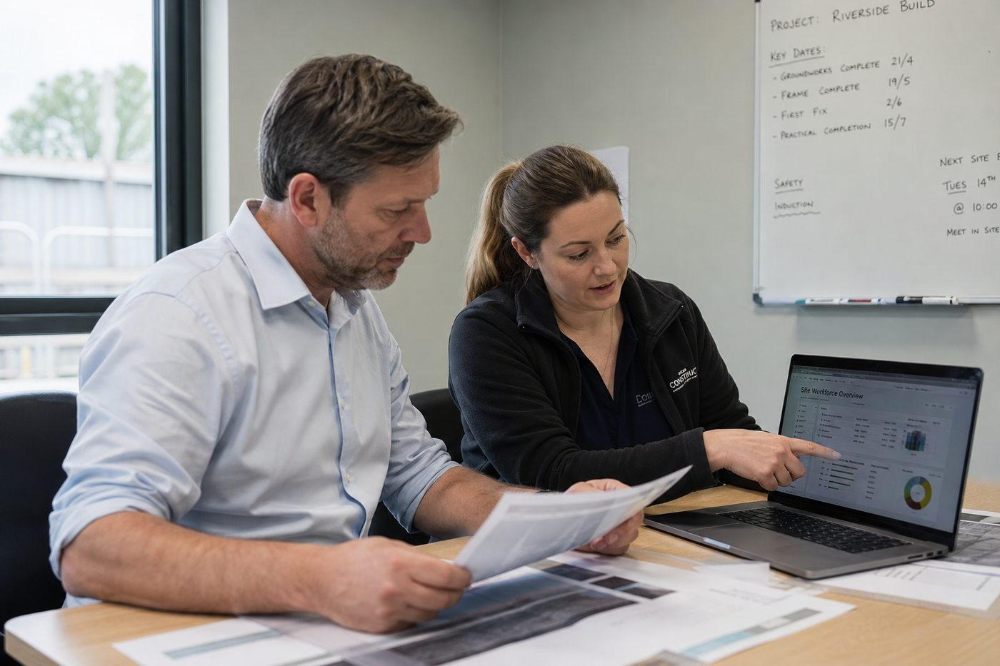

Quem somos
Porque existe a PRJGENUI
A PRJGENUI Workforce nasceu da experiência de Marizilena Silva Fortes a gerir trabalhadores e subempreiteiros de construção e a lidar com as verificações de conformidade e os problemas de última hora que os acompanham.

O problema que queríamos resolver
A maior parte do recrutamento fica por encontrar alguém disponível. Antes de deixar entrar um trabalhador na obra, um empreiteiro precisa de saber bastante mais do que isso.
O que corre mal
Os trabalhadores não aparecem ou cancelam à última hora. Os cartões e a formação caducaram ou estão em falta. Pessoas descritas como experientes não conseguem fazer o trabalho. Os que chegam não são os que foram acordados e uma "equipa" afinal são desconhecidos.
O que fazemos em relação a isso
Reunimos Direito ao Trabalho, CSCS, formação, experiência e histórico profissional num Passaporte de Trabalhador. Cruzamo-lo com o que o trabalho realmente precisa. Mantemos um registo de fiabilidade após a colocação, para que o próximo empreiteiro veja o que realmente aconteceu.
Como trabalhamos
Primeiro as evidências de conformidade
Ninguém com um cartão caducado ou formação vencida é proposto para um trabalho que a exija. Verificamo-lo antes de tudo o resto.
A fiabilidade é registada
Cada trabalho que um trabalhador realiza, ou a que não aparece, fica no registo. Pertence ao trabalhador e é acrescentado após cada trabalho.
Uma equipa significa pessoas que trabalharam juntas
Só chamamos equipa a um grupo quando os seus membros o fizeram de verdade. Caso contrário, dizemo-lo.
Um início rápido nas substituições
Se um trabalhador confirmado comunicar uma falta ou cancelamento de última hora, o nosso objetivo é iniciar a procura de substituto em 60 minutos durante o horário de funcionamento. É o compromisso de iniciar a procura, não a promessa de encontrar substituto.
O que verificamos
Quando existe um serviço oficial de verificação ou uma base de dados reconhecida, os dados dos cartões e das qualificações são verificados junto da fonte relevante e a evidência da verificação fica registada.
Direito ao Trabalho
Evidências verificadas e registadas antes de um trabalhador ser proposto.
Cartões CSCS
Tipo, estado e validade verificados na fonte quando existe serviço.
Qualificações
NVQ, City & Guilds, IPAF e PASMA, com datas de validade registadas.
Certificados de formação
Sensibilização para o amianto, trabalho em altura, manipulação manual de cargas e formação específica da obra.
Histórico profissional
Trabalhos anteriores, referências e feedback do supervisor.
Registo de fiabilidade
Assiduidade, evidência de desempenho e se os empreiteiros voltariam a trabalhar com essa pessoa.
Estamos a trabalhar para as adesões à CHAS, SafeContractor, Constructionline e REC. Acrescentaremos cada uma aqui quando estiver confirmada. Não mostramos selos que não temos.
Um Passaporte de Trabalhador é um perfil de mão de obra da PRJGENUI. Não é um passaporte oficial nem um documento de identificação.
Quem está por trás

Marizilena Silva Fortes
Fundadora e Diretora
A Marizilena geriu trabalhadores e subempreiteiros de construção e lidou com a conformidade e os problemas de última hora que os acompanham. A PRJGENUI está construída em torno do que ela tinha de resolver vezes sem conta na obra.
Dados da empresa
- Nome registadoPRJGENUI Workforce Ltd.
- Número de empresa13205257, registada em Inglaterra e Gales
- ConstituídaFevereiro de 2021
- Sede registada124 City Road, Londres EC1V 2NX
- Onde trabalhamosHampshire, Surrey e o Sudeste de Inglaterra
Fale connosco
Estamos a aceitar os nossos primeiros parceiros de piloto em Hampshire, Surrey e no Sudeste. Diga-nos o que precisa e respondemos.